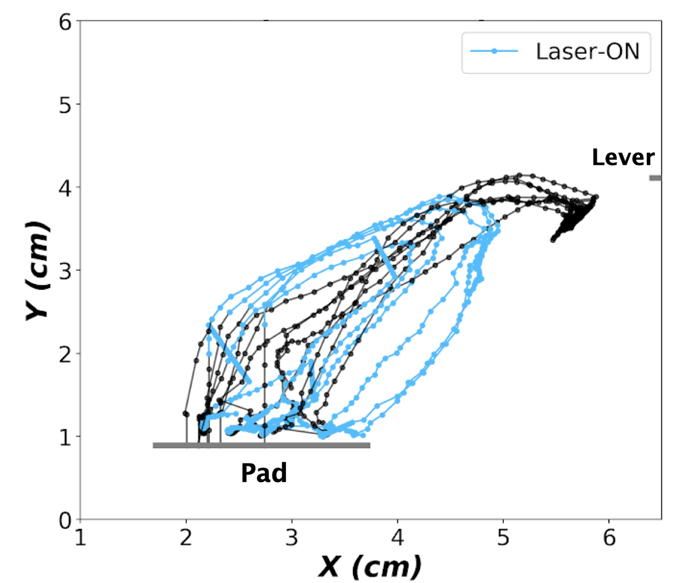
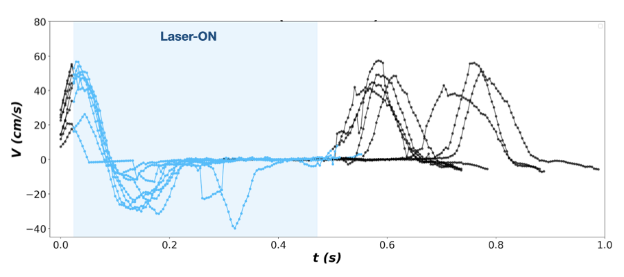

Lever Reaching Task Analysis
File hierarchy
The root directory to your project should have this hierarchy:
root
|-- Laser_ChR2 <-- optogenetic manipulation with CHR2
| |-- Animal_0 <-- data for animal with ChR2 expression
| | |-- StimType0_intensity0_mW_protocol0_Nf_NumberOfFrames0 <-- folders separate protocols e.g. 'Beta_15_mW_all-RT_Nf_500'
| | | |-- Right/Left <-- specifying the side that was filmed
| | | | |-- DLC <-- contains body part trackings of all sessions derived from DLC
| | | | | |-- session_0_DLC.xlsx
| | | | | .
| | | | | .
| | | | `-- Laser <-- contains laser detection files derived from LED_deetection.py
| | | | |-- session_0_laser.xlsx
| | | | |-- session_1_laser.xlsx
| | | | .
| | | | .
| | | |
| | | `config_protocol0.ymal <-- config file for this specific protocol and animal
| | |
| | |-- StimType1_intensity1_mW_protocol1_Nf_NumberOfFrames1
| | |
| | .
| | .
| . |
| . `-- StimType1_intensity1_mW_protocol1_Nf_NumberOfFrames1
| |
| `-- Animal_n <-- same for all other animals
|
|-- Laser_ArchT
|
|-- 6OHDA
| |-- Animal_0
| .
| .
| |
| `-- Animal_m
|
|
`-- Subplots
Experiment
There are different experiment protocols for laser stimulation:
 
all-RT : where laser stimulation starts when auditory cue is ended and lasts until paw leaves the pad.
all-MT : where laser stimulation starts when paw leaves the pad until lever is pressed (successful trials) or untill the end of trial (failed trials)
partial-MT : where laser stimulation starts when paw leaves the pad and continues for a certain time period smaller than the whole movement time (usually 250 ms, see example bellow)
{kind=link}
{kind=link}
Config file
When calling the function set_conf_and_df a template of the config file is generated and the corressponding information about the protocol are added to it using the folder name. You have to make sure before any attempt to integrate all sessions, all the protocols do have their corresponding config.yaml file.
In case you wanted to modify any information about the config file, open, edit, save and make sure you import the cfg file manually again.
Measures
- Traveled distance :
The whole distance travelled by the paw during MT, starting movement until lever press for successful trials and until the end of trial for failures
- Tursoisity:
The ratio of the travelled distance to the direct line connecting the position of the paw on the pad to the lever.
- MT:
Movement time
- RT:
Reaction time
- Maximum velocity:
The maximum velocity reached within one trial
Misdetection Correction
Even with an optimized trained network it so happens that there are mistakes in the trackings of body parts. Since the movement of the hand is rather fast, even with a recording of 250 fps, the time resolution is not high enough to be able to detect where DeepLabCut is making a mistake. However, each detection derived from the DeepLabCut is reported together with a likelihood value. Here we get use of this value for detecting these misdetections by setting a p_cutoff.
Here are the steps taken:
![@startuml
if (<size:16>**Less than "n_good_points_ratio" likelihood>p_cutoff detections?**</size>) then (yes)
:Dicard trial;
stop
else (no)
if (Check for likelihood>p_cutoff detection above \n the pad within a certain x vicinity of it) then (Found)
:Put equidistant points for frames starting \n from the pad to the point found above;
else (Not found)
:Discard trial;
stop
endif
:Detect single frame misdetections \n among >p_cutoff detections;
:Correct by the average position of a \n number of detections before and after;
if (<size:16>** Check for multiple consecutive high likelihood misdetections?**</size>) then (Found)
:Replace the points with a set of equidistant points between \n the start and end of misdetected points;
else (Not found)
endif
:Replace likelihood<p_cutoff detections with sets of \n equidistant points between the likelihood>p_cutoff points;
stop
@enduml](../../_images/plantuml-03c2d885d85ef0a58a8cf042ec7bd8be4b9015b4.png)
Metadata
The data derived from DeepLabCut and LED detections is then structured into a class object after misdetection handling for easier access. All the trials with the same protocol from different animals is integrated into one class. The class hold information about the following parameters for all trials (and in some cases detailed down to frames of each trial):
path : full path to the session which contains the trial
rat_no : rat number the trial belongs to
pad_left_x : far left x end of the pad in the session in cm
pad_right_x : far right x end of the pad in the session in cm
pad_y : y position of the pad in cm
lever_x : x position of the lever for each trial
lever_y : y position of the lever for each trial
folder : the folder to this protocol
n_pad_miss_detection : number of pad LED misbehavior in all sessions
fp_trial : frame per second of video recording
tortuosity : tortuosity of the trial
distance : the distance travelled by the paw
epochs_x : x position of one body land mark for the whole trial (frames dedicated to timebins before leaving the pad and after reaching the lever are set to -1)
epochs_y : y position of one body land mark for the whole trial (frames dedicated to timebins before leaving the pad and after reaching the lever are set to -1)
likelihood : likelihood of each DLC detection
velocity_r : absolute velocity of the paw during the whole trial (this value for frames dedicated to timebins before leaving the pad and after reaching the lever are set to velocity_mask)
steps : the absolute displacement within each frame
pad_off_t : times when paw left the pad relative to start of trial (-1 if didn’t) reported in frame numbers
got_reward_t : times of lever press in each trial (-1 for failed) reported in frame numbers
pad_miss_detection : set True for mis detected pad trials
starts : start of each trial in the session timeline reported in frame numbers
ends : stop of each trial in the session timeline reported in frame numbers
MT : The whole movement time reported in frame numbers
failure : True for trials where either paw didn’t leave the pad or didn’t press the lever
to_keep : set True for trials that are cleared without any problems
n_trials : number of trials in sessions
n_failed : number of failed trials in sessions
n_succeeded : number of successful trials in all sessions
n_laser_trials : number of trials containing laser stimulation
laser_trial : set True for trials that contain laser stimulation
laser_ind: stores the indices for laser-on time points
laser_duration : laser duration reported in number of frames
laser_start : time of the laser onset reported in number of frames
laser_pulse : laser pulse type (e.g. Square, Beta etc.)
laser_intensity : intensity of the laser stimulation in mW
laser_protocol : laser stimulation protocol (e.g. all-RT, all-MT etc.)
you can save the data containing the session in form of .pickle or a .csv file.
Jupyter Notebook and Data Analysis
You will have the chance to look at a variety of measures for the sessions:
- Visualize the traces of the paw and the absolute velocity in time with highlighting the laser-on time points as shown above for:
one trial
trials in one session
all trials of one animal
all trials of same protocol in multiple animals
Compare Successful and failed trial traces.
Compare trials containing laser with trials without laser stimulation
- Compare statistical values of parameters bellow for laser vs. non laser sessions:
RT
MT
Travelled distance
Maximum Velocity
Tortuosity
Look at mean trajectory of trials showing variances in x bins.